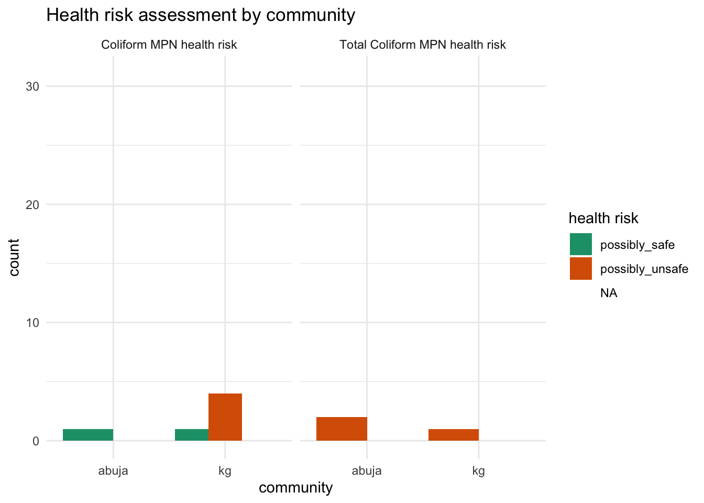

The goal of watercostaccra is to provide users with documentation on two surveys on household water costs, coping mechanisms as well as water point estimates conducted in October and November 2023 in Accra, Ghana. The data sets are associated with the following project report completed by Elizabeth Vicario for the “data science for openwashdata” course offered by openwashdata.org.
Installation
You can install the development version of watercostaccra from GitHub with:
# install.packages("devtools")
devtools::install_github("openwashdata/watercostaccra")Alternatively, you can download the individual data sets as a CSV or XLSX file from the table below.
| dataset | CSV | XLSX |
|---|---|---|
| households | Download CSV | Download XLSX |
| waterpoints | Download CSV | Download XLSX |
Data
The package provides access to household water costs, coping mechanisms as well as water point estimates.
The households data set contains data about a household survey on water costs and coping strategies in Accra. It has 116 observations and 89 variables.
| variable_name | variable_type | description |
|---|---|---|
| id | double | identification number |
| community | factor |
the communities surveyed, options including 1 kg: Korle Gonno and 2 abuja: Abuja
|
| housing_type | factor |
housing type, options includin 1 block_unit: unit in a row of apartments made of cement blocks, 2 wood_unit: unit in a row of apartments made of wood, 3 house, 4 compound_house: single-story L- or C-shaped house with a multiple units around a shared courtyard, 5 multistory_apt: multi-story apartment building, 6 wood_shack: wooden shack, 7 no_structure, and 8 other
|
| respondent_relationship_to_hh | factor |
respondent’s relationship to the household head (respondent identified), options including 1 self, 2 child, 3 spouse, and 4 other_relative
|
| gender | factor |
gender (self-identified) of respondent, options including 1 female and 2 male
|
| tenure | factor |
tenure status, options including 1 rented: renter, 2 owned: homeowner, or 3 no_payment: living without payment)
|
| years_in_community | integer | number of years respondent has lived in community |
| adult_count | double | number of adults in household including respondent. Household is described as those “eating from the same pot” |
| child_count | double | number of children under 18 in household. Household is described as those “eating from the same pot” |
| rooms_in_hh | double | number of rooms used for sleeping. Household is described as those “eating from the same pot” |
| business_ownership | factor |
household or respondent owns a business, options including 1 respondent-owned and 2 household-owned
|
| business_location | factor |
location type of the business, options including 1 home_based, 2 outside_home: fixed location outside home, or 3 mobile: mobile location.
|
| business_category | factor |
type of business, options including 1 food, 2 shop, 3 salon, 4 vented_water, 5 tailoring, and 6 other_services.
|
| business_water_use | logical | respondent’s business uses water beyond typical needs of household (true or false) |
| business_water_source | factor | primary source of water for business use (packaged water, piped to home, piped to neighbor’s home, piped to compound, commercial or public tap, borehole, dug well, spring water, delivered water) |
| primary_dw_source | factor | primary source of drinking water (packaged water, piped to home, piped to neighbor’s home, piped to compound, commercial or public tap, borehole, dug well, spring water, delivered water) |
| dw_reason_convenience | logical | respondent names convenience as a reason for using the drinking water source (true or false) |
| dw_reason_affordable | logical | respondent names affordability as a reason for using the drinking water source (true or false) |
| dw_reason_available | logical | respondent names availability as a reason for using the drinking water source (true or false) |
| dw_reason_cold | logical | respondent names temperature (cold water) as a reason for using the drinking water source (true or false) |
| dw_reason_clean | logical | respondent names cleanliness as a reason for using the drinking water source (true or false) |
| dw_reason_taste | logical | respondent names taste as a reason for using the drinking water source (true or false) |
| dw_reason_habit_or_cultural_norm | logical | respondent names habit or cultural norm as a reason for using the drinking water source (true or false) |
| dw_reason_trustworthy | logical | respondent names trustworthiness as a reason for using the drinking water source (true or false) |
| dw_reason_health | logical | respondent names health as a reason for using the drinking water source (true or false) |
| dw_reason_other | logical | respondent names another reason for using the drinking water source (true or false) |
| package_type_preference | factor |
respondent typically purchases individual, options including 1individual: sachets/packets/bottles, 2 bag: multipacks of these, or 3 both
|
| package_size_reason_storage_space | logical | respondent names storage space in the home as a reason for purchasing the preferred package type (true or false) |
| package_size_reason_cost_effective | logical | respondent names cost effectiveness as a reason for purchasing the preferred package type (true or false) |
| package_size_reason_temperature | logical | respondent names temperature at the time of purchase as a reason for purchasing the preferred package type (true or false) |
| package_size_reason_available_money | logical | respondent names availability of money as a reason for purchasing the preferred package type (true or false) |
| package_size_reason_convenience | logical | respondent names convenience as a reason for purchasing the preferred package type (true or false) |
| package_size_reason_size | logical | respondent names the size needed for the respondent or household as a reason for purchasing the preferred package type (true or false) |
| package_size_reason_avoid_wasting_water | logical | respondent names avoiding wasting water by purchasing only when needed as a reason for purchasing the preferred package type (true or false) |
| dw_treatment | factor |
treatment methods of water before drinking, options including 1no_treatment, 2 boil, 3boil;settle, 4 filter, and 5settle
|
| primary_water_source | factor |
primary water source for non-drinking water, options including 1packaged water, 2piped_to_home, 3piped to neighbor’s home, 4piped to compound, 5commercial or public tap, 6borehole, 7dug well, 8spring water, and 9 delivered water)
|
| primary_source_reason_proximity | logical | respondent names proximity to home as a reason for using the primary source of non-drinking water (true or false) |
| primary_source_reason_convenience | logical | respondent names convenience as a reason for using the primary source of non-drinking water (true or false) |
| primary_source_reason_affordable | logical | respondent names affordability as a reason for using the primary source of non-drinking water (true or false) |
| primary_source_reason_availability | logical | respondent names availability as a reason for using the primary source of non-drinking water (true or false) |
| primary_source_reason_cleanliness | logical | respondent names cleanliness as a reason for using the primary source of non-drinking water (true or false) |
| primary_source_reason_other | logical | respondent names another reason for using the primary source of non-drinking water (true or false) |
| other_non_dw_source_use | logical | respondent uses at least one source besides primary non-drinking water source (true or false) |
| other_non_dw_sources_packaged | logical | respondent uses packaged water as an additional source of non-drinking water (true or false) |
| other_non_dw_sources_piped_to_home | logical | respondent uses water piped to home as an additional source of non-drinking water (true or false) |
| other_non_dw_sources_piped_to_neighbor | logical | respondent uses water piped to a neighbor’s home as an additional source of non-drinking water (true or false) |
| other_non_dw_sources_commercial_tap | logical | respondent uses a commercial or public tap as an additional source of non-drinking water (true or false) |
| other_non_dw_sources_piped_to_compound | logical | respondent uses water piped to the compound as an additional source of non-drinking water (true or false) |
| other_non_dw_sources_borehole | logical | respondent uses a borehole as an additional source of non-drinking water (true or false) |
| other_non_dw_sources_dug_well | logical | respondent uses a dug well as an additional source of non-drinking water (true or false) |
| other_non_dw_sources_spring_water | logical | respondent uses spring water as an additional source of non-drinking water (true or false) |
| other_non_dw_sources_delivered_water | logical | respondent uses delivered water as an additional source of non-drinking water (true or false) |
| other_non_dw_sources_other | logical | respondent uses another source as an additional source of non-drinking water (true or false) |
| secondary_source_reason_availability | logical | respondent uses a secondary source of non-drinking water because the primary source is not available (true or false) |
| secondary_source_reason_unclean | logical | respondent uses a secondary source of non-drinking water because the primary source is not clean (true or false) |
| secondary_source_reason_crowding | logical | respondent uses a secondary source of non-drinking water because the primary source is crowded (true or false) |
| secondary_source_reason_shower | logical | respondent uses a secondary source of non-drinking water because shower stalls are available (true or false) |
| secondary_source_reason_convenient_location | logical | respondent uses a secondary source of non-drinking water because of its convenient location (true or false) |
| tap_payment_mode | factor |
respondent’s mechanism for paying for piped water (all respondents use piped water as a primary or secondary source). Options include 1 pay_to_fetch: paying to fetch, 2 shares_bill: sharing or paying the whole bill, or 3 both (at different taps).
|
| daily_hh_water_cost_for_pay_to_fetch | double | daily estimated cost of drinking water for respondent’s household |
| daily_hh_water_cost_phhm_for_pay_to_fetch | double | daily estimated cost of drinking water for respondent’s household per household member |
| past_struggle_to_find_water | logical | respondent has struggled to find water before (defined as extreme difficulty in accessing water) (true or false) |
| time_of_last_struggle_to_find_water | factor |
respondent’s last time of struggle to find water, options including 1 last_3_days, 2 last_7_days, 3 last_30_days, 4 last_year, and 5 over_year_ago.
|
| weekdays_struggle_to_find_water | double | days in a week the respondent typically struggles to find or pay for water |
| past_struggle_primary_reason | factor |
primary reason for past struggles to find water, options including 1 availability: availability, 2 cost, and 3 distance: distance to nearest source.
|
| tap_closure_knowledge_known | logical | respondent’s knowledge about tap closures: usually known (true or false) |
| tap_closure_knowledge_sometimes | logical | respondent’s knowledge about tap closures: sometimes known (true or false) |
| tap_closure_knowledge_expected_pattern | logical | respondent’s knowledge about tap closures: expected due to patterns in closures (true or false) |
| tap_closure_knowledge_unknown | logical | respondent’s knowledge about tap closures: not known (true or false) |
| tap_closure_knowledge_no_answer | logical | respondent’s knowledge about tap closures: no answer (true or false) |
| coping_mechanism_spend_more | logical | respondent copes with water shortage by spending more on the same amount of water (true or false) |
| coping_mechanism_purchase_more_to_store_at_home | logical | respondent copes with water shortage by purchasing extra water to store at home (true or false) |
| coping_mechanism_use_other_source | logical | respondent copes with water shortage by using another source (true or false) |
| coping_mechanism_sachet_to_cook | logical | respondent copes with water shortage by using packaged water for cooking (true or false) |
| coping_mechanism_skipped_cooking | logical | respondent copes with water shortage by skipping cooking (true or false) |
| coping_mechanism_sachet_to_bathe | logical | respondent copes with water shortage by using packaged water for bathing (true or false) |
| coping_mechanism_skipped_bathing | logical | respondent copes with water shortage by skipping bathing (true or false) |
| coping_mechanism_closed_business | logical | respondent copes with water shortage by closing the business (true or false) |
| coping_mechanism_skipped_laundry | logical | respondent copes with water shortage by skipping laundry (true or false) |
| water_storage_drinking_water | logical | respondent typically stores drinking water at home (true or false) |
| water_storage_non_drinking_water | logical | respondent typically stores non-drinking water at home (true or false) |
| water_storage_none | logical | respondent typically does not store water at home (true or false) |
| storage_containers_plastic_jug | logical | respondent stores non-drinking water in plastic jugs (jerry cans or Kufuor gallons) (true or false) |
| storage_containers_uncovered_barrels | logical | respondent stores non-drinking water in uncovered barrels (true or false) |
| storage_containers_covered_barrels | logical | respondent stores non-drinking water in covered barrels (true or false) |
| storage_containers_other_covered | logical | respondent stores non-drinking water in other covered containers (true or false) |
| storage_containers_other_uncovered | logical | respondent stores non-drinking water in other uncovered containers (true or false) |
| estimated_non_dw_storage_capacity | double | estimated capacity of storage for non-drinking water (liters) |
| estimated_stored_non_dw | double | estimated actual storage of non-drinking water (liters) |
The waterpoints data set contains data about a water point survey conducted in Accra as well. It has 49 observations and 30 variables. For an overview of the variable names, see the following table.
| variable_name | variable_type | description |
|---|---|---|
| id | integer | identification number |
| community | factor |
the communities surveyed, options including 1 kg: Korle Gonno and 2 abuja: Abuja
|
| type | factor |
water point type,options including 1 piped_water, 2 borehole, 3 public_bath, and 4 natural_spring.
|
| available_services | factor | services available at water point, options including (bathing, public sale of water, toilet, or comination of these) |
| location | factor |
location of the water point, options including 1 within_a_compound or 2 on_the_street: outside compound adjacent to street.
|
| year_established | integer | year established |
| year_established_unknown | logical | year of establishment is unknown to the respondent (TRUE, otherwise NA) |
| owner | factor |
owner, options including 1 household_head, 2 household_member, 3 community_member: community member outside household, and 4 multiple_community_members: multiple community members outside household
|
| owner_na | logical | owner question not applicable (TRUE, otherwise NA) |
| constructor | factor |
type of constructor, options including 1 government or 2 community_member.
|
| managers | factor | type of typical manager(s) of water point, options including household head or member(s), employee(s), self managed by customers, or combination of these) |
| estimated_storage_capacity_liters | double | estimated storage capacity in liters |
| average_visits_per_customer | double | average number of daily visits per customer |
| respondent_would_use_to_prepare_rice | logical | respondent would use this water to prepare rice, based on its quality (true or false) |
| perception_of_quality | factor |
respondent’s perception of water quality, options including 1 acceptable, 2 high, and 3 low.
|
| tap_closure_days_per_week | double | typical number of tap closures per week |
| price_25_liter_jug | double | current price of 25-liter jug of water (cedis) |
| price_20_liter_bucket | double | current price of 20-liter bucket of water (cedis) |
| price_30_liter_basin | double | current price of 30-liter basin of water (cedis) |
| avg_price_per_liter_cedis | double | average price per liter, calculated by averaging price per liter of known prices (cedis) |
| tap_closure_changes | factor | typical dynamics of water point management during closure (increasing prices, water point likely to close due to low storage, bathing customers have less water than when taps are flowing) |
| flexible_pricing | logical | manager adjusts price depending on amount of water needed or familiarity or need of customer (true or false) |
| price_increase | logical | price of any volume of water has increased in the last year (true or false) |
| CBT_sample_source | factor |
source of sample for compartment bag test (CBT) supplied by Aquagenx (https://www.aquagenx.com/cbt-ectc/), options including 1 indirect_from_tap_(traveled_through_hose), 2 other_storage_(traveled_through_hose_or_poured_through_container), 3 storage_tank, and 4 tap.
|
| coli_mpn | double | results of E. Coli most probable number (MPN) test per 100 mL sample |
| coli_mpn_ci | double | results of E. Coli most probable number (MPN) test per 100 mL sample - upper 95% confidence interval (CI) |
| coli_mpn_health_risk | factor |
results of E. Coli most probable number (MPN) test per 100 mL sample - descriptive health risk, options including options including 1safe, 2possibly_safe, 3 possibly_unsafe and 4unsafe.
|
| tc_mpn | double | results of Total Coliforms (TC) most probable number (MPN) test per 100 mL sample |
| tc_mpn_ci | double | results of Total Coliforms (TC) most probable number (MPN) test per 100 mL sample - upper 95% confidence interval (CI) |
| tc_mpn_health_risk | factor |
results of Total Coliforms (TC) most probable number (MPN) test per 100 mL sample - descriptive health risk, options including 1safe, 2possibly_safe, 3 possibly_unsafe and 4unsafe.
|
Example
Here is an example illustrating health risks associated with the water samples collected in Accra.
library(watercostaccra)
library(ggplot2)
library(dplyr)
library(tidyr)
long_data <- waterpoints |>
pivot_longer(cols = c(coli_mpn_health_risk, tc_mpn_health_risk),
names_to = "risk_type",
values_to = "health_risk")
# Count occurrences of each health_risk category within each community and risk_type
count_data <- long_data |>
group_by(community, risk_type, health_risk) |>
summarise(count = n(), .groups = 'drop')
facet_labels <- c(
coli_mpn_health_risk = "Coliform MPN health risk",
tc_mpn_health_risk = "Total Coliform MPN health risk"
)
# Create the bar plot
ggplot(count_data, aes(x = community, y = count, fill = health_risk)) +
geom_bar(stat = "identity", position = "dodge") +
facet_wrap(~ risk_type, labeller = labeller(risk_type = facet_labels)) +
labs(title = "Health risk assessment by community",
x = "community",
y = "count",
fill = "health risk") +
scale_fill_brewer(palette = "Dark2") +
theme_minimal()
License
Data are available as CC-BY.
Citation
Please cite this package using:
citation("watercostaccra")
#> To cite package 'watercostaccra' in publications use:
#>
#> Vicario E, Götschmann M, Davidson B, Amankwaa E, Zhong M, Schöbitz L
#> (2024). "watercostaccra: Household Water Costs and Coping Strategies,
#> Accra 2023." doi:10.5281/zenodo.13981224
#> <https://doi.org/10.5281/zenodo.13981224>.
#> <https://github.com/openwashdata/watercostaccra>.
#>
#> A BibTeX entry for LaTeX users is
#>
#> @Misc{vicario_etall:2024,
#> title = {watercostaccra: Household Water Costs and Coping Strategies, Accra 2023},
#> author = {Elizabeth Vicario and Margaux Götschmann and Betty Avanu Davidson and Ebenezer F. Amankwaa and Mian Zhong and Lars Schöbitz},
#> year = {2024},
#> doi = {10.5281/zenodo.13981224},
#> url = {https://github.com/openwashdata/watercostaccra},
#> abstract = {A household survey on water costs and coping strategies (116 households) and a water point survey (49 water points, with E. coli and total coliform test results) were conducted in October and November 2023 in two low-income communities in metropolitan Accra, Ghana. These are Korle Gonno, a larger, well-planned coastal area with over 35 household water vendors, and Abuja, a small, densely packed, extralegal settlement with 15 water vendor and bathhouse businesses.},
#> keywords = {open data,washdata,water costs,coping strategies,household survey,water points,water vendors,water quality,Accra,Ghana,accra,ghana,household-surveys,open-data,openwashdata,r,water-cost},
#> version = {0.0.0.9000},
#> }